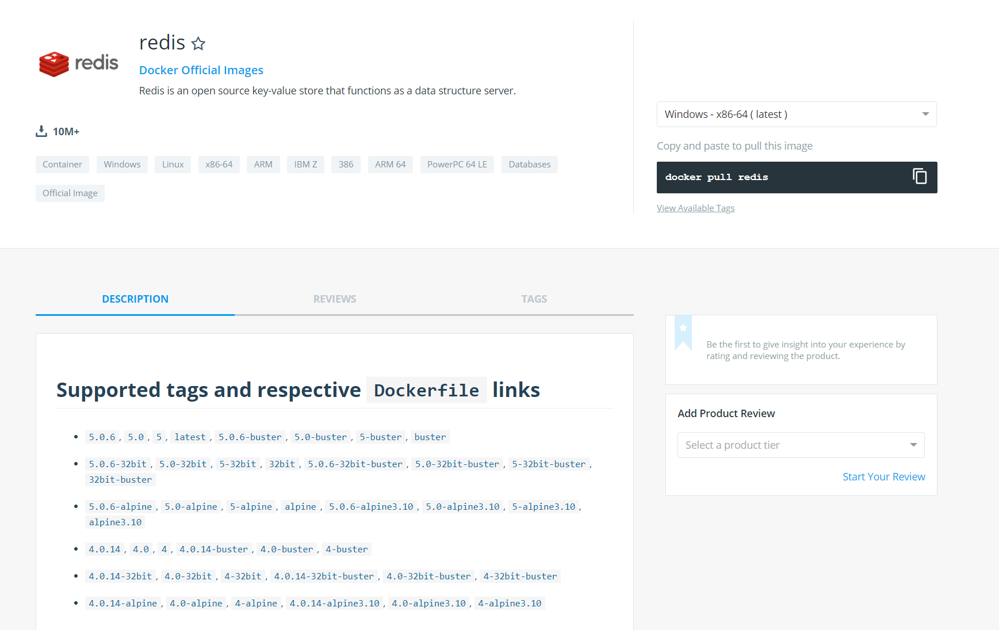

2019-10-15-docker安装redis
下载拉取Redis镜像
1 | docker pull redis |

运行docker
1 | docker run --name some-redis -d redis |
其它启动方式：
启动redis实例并指定端口：
1 | docker run --name redis -d -p 6379:6379 redis |
启动redis实例，指定端口和密码：1
docker run --name redis -d -p 6379:6379 redis --requirepass "123456"